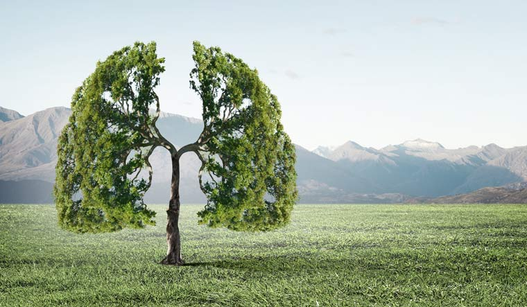
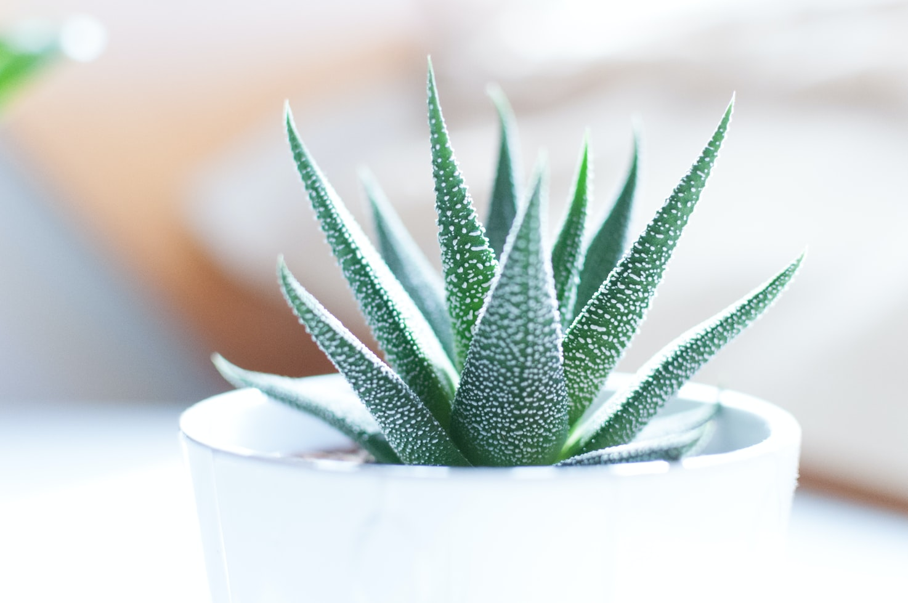

A website that introduce to you what's importaint about green
People should spend more time in the greenfield.
However in most of the cities especially in urban area, the greening rate is lower than expect.
So, it is importaint to brings the colour inside our home. Why it is importaint?

How does air quality affect your health?
Scientists had revealed the answer to us...
these are the risk you might have when you're live in a city.
They might slowly harm your lung and body. And mental health is also affected?!

How does plant improve your overall life quality?
There are the reasons why we needs to keep contact with natural, and we got the solutions ti you.
It will blossom some new things in your life.